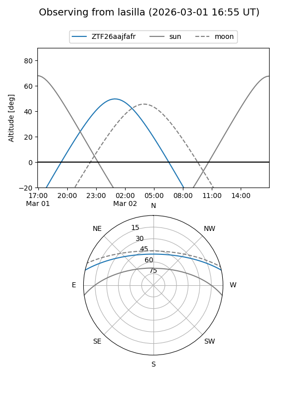
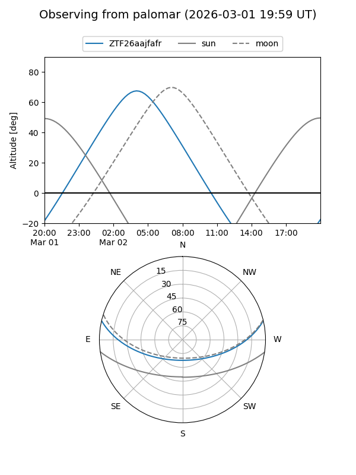

ZTF26aajfafr
Target ZTF26aajfafr at 2026-03-02 08:05
Aliases and brokers:
FINK: link
Lasair: link
ALeRCE: link
alt names
ZTF26aajfafr (ztf,fink_ztf)
Coordinates:
equatorial (ra, dec) = 103.0885,+10.96400
equatorial (HMS+DMS) = 06:52:21.24,+10:57:50.40
galactic (l, b) = (203.2508,+5.17611)
Flags:
Photometry:
last ztfg=17.81
1 ztfg detections
Lightcurve
Visibility


Additional plots